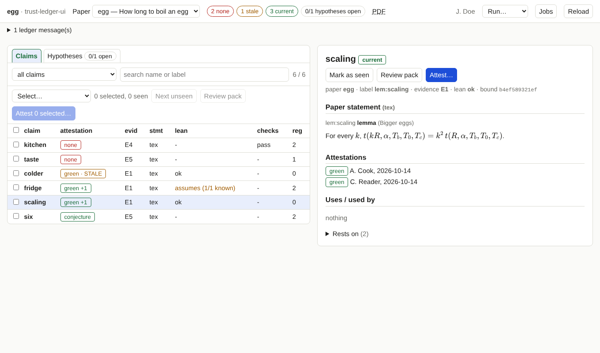

A tour of the page¶
Prerequisites
The tool is running (install). Nothing else; this page is only about looking.

The regions¶
Header. The project, the paper menu (with the paper's title if it has a paper.toml), counts for the paper, links to
its PDFs, the person, the Run… menu for background jobs, Jobs, and Reload.
The counts:
| Chip | Meaning |
|---|---|
| none | claims without any attestation |
| stale | claims that have attestations, but none is current: the statement or what it rests on changed since |
| current | claims with at least one current attestation |
| hypotheses open | hypotheses nobody has attested as a known theorem (yet) |
Claim list (left). Tabs Claims and Hypotheses. For claims: a filter (the default is needs attention: none plus
stale), a search over names and labels, and columns for the attestation, the evidence class, where the statement comes from
(tex or manual), the state of each tool (for example Lean) and the size of the register. Click a column header to sort.
On a narrow screen only the claim and its attestation are shown.
Detail (right). The paper statement, the back-translation of the formal statement and the Lean statement if the project has them, the attestation history, what the claim uses and what uses it (click to jump), what it rests on, and, if it is stale, what changed.
Assessments¶
If the ledger holds a model's assessment of a claim (a comparison of the paper text, the formal statement and its back-translation), the detail view shows its verdict and text, marked as by a model, an aid; not an attestation. A badge says whether it is still valid:
| Badge | Meaning |
|---|---|
| current | it records the claim's present statement (and back-translation) as what it judged |
| outdated | it judged an older state: the statement or something it rests on changed, or the back-translation was redone. Read the verdict as describing that older state |
| unbound | it was written before assessments recorded what they judged, so nothing can be said. ledger.py assess CLAIM --bind states that it still fits |
For an unbound assessment in a project under git, the page compares with the history (a few seconds, once per paper): it
shows From git: since it was written these changed: paper statement, back-translation …, or that none of the paper
statement, the Lean references, the Lean extract and the back-translation changed (probably still describes the claim, which
only you can confirm). The same list is ledger.py assess --audit; --bind-unchanged binds the unchanged ones.
The list filter assessment outdated or unbound collects the claims to look at. A new assessment is recorded with
ledger.py assess CLAIM --verdict … --model … --notes-file …, which stores the state it judged.
Reading what is shown¶
- Attestation column. The strongest current attestation, for instance
green +1(one more by someone else) orgreen · STALE(only stale ones). ✓after a name marks claims you have marked as seen in this browser.- Rendering. Formulas are drawn with KaTeX. A formula the renderer cannot draw is shown as source in red, with the reason as a tooltip, and the detail view lists how many there were. Unknown LaTeX commands in the text appear in amber. Nothing is hidden silently.
Banners and messages¶
| Banner | What it tells you |
|---|---|
| Files changed on disk since this was loaded (amber) | an input of the ledger changed; Reload now reads it again |
| N current attestation(s) have no snapshot (blue) | see Snapshots and diffs |
| N ledger message(s) | warnings and errors that ledger.py status prints, for example labelled results that are not in the ledger |
Keyboard¶
Shortcuts work when no text field has the focus. Every action also has a button.
| Key | Action |
|---|---|
| j / k | next / previous claim (or hypothesis) |
| x | add the current claim to the selection or remove it |
| v | mark the current claim as seen / not seen |
| a | attest the selection, or the current claim if nothing is selected |
| t | switch between claims and hypotheses |
Links you can bookmark¶
?paper=NAME&claim=NAME opens a paper and a claim directly. The address is kept up to date while you click, so reloading the
page returns to where you were.
What is not shown¶
The tool shows the ledger as it is on disk. It keeps no database of its own; closing the tab loses nothing except the seen marks, which live in the browser.